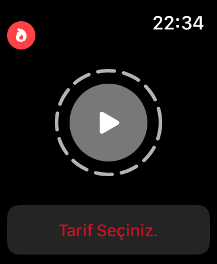
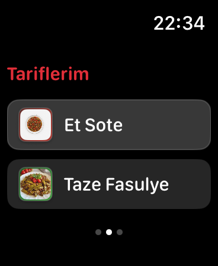
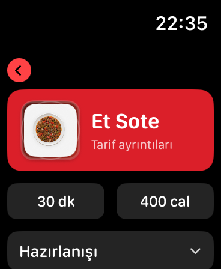
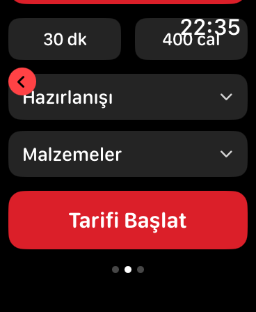
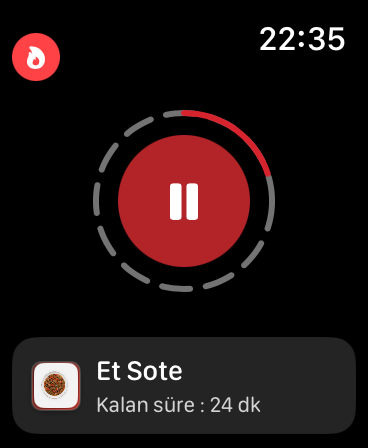
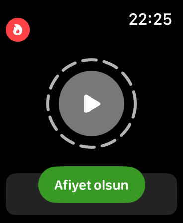

Apple Watch SE 44mm için tasarlanan bu uygulama, Vestel Multicooker cihazınızı bileğinizden kontrol etmenizi sağlar. Tarif seçin, pişirmeyi başlatın ve bilekliğinizdeki zamanlayıcıyı takip edin.






Et Sote, Taze Fasulye, Kabak Yemeği, Garnitürlü Pilav, Humus ve Mercimek Çorbası tarifleri yerleşik olarak gelir.
Tarifi başlattığınızda pişirme süresi otomatik başlar. Duraklatıp devam ettirebilirsiniz.
Pişirme tamamlandığında "Afiyet olsun" bildirimi alırsınız. Bildirim geçmişi kayıt altına alınır.
Tarif Seçiniz, Tariflerim ve Bildirimler ekranları arasında sola/sağa kaydırarak geçiş yapılır.
Her tarif için malzeme listesi ve hazırlanış adımları açılır-kapanır paneller ile sunulur.
Her tarife özel renk teması; pişirme sırasında canlı ilerleme halkası ile görsel geri bildirim.